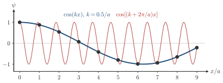

Advanced Quantum Materials 2027 · All lectures · Lecture notes
Session 2. Symmetries, Tight-Binding Band Structure Theory, and Effective Models
2.6 The meaning of the phase, which is the quasi-momentum
What does the phase \(\varphi\) in (2.2) mean physically, and not only formally? We will now see that it is the crystal momentum times the lattice constant, \(\varphi=ka\), and that it is defined only up to \(2\pi\), so that \(k\) and \(k+2\pi/a\) are one state on the lattice.
\[S|\psi\rangle = e^{i\varphi}|\psi\rangle, \qquad \varphi \in (-\pi,\pi]. \tag{2.2}\]
This is the eigenvalue of a unitary symmetry operator \(S\), which is a phase, as Section 2.3 shows. For the translation \(T\) by one lattice constant the phase \(\varphi\) is the Bloch phase of Section 2.4, and the eigenstates are the states \(e^{in\varphi}\) of (2.6).
We go back to the Schrödinger equation in the continuum and ask how a wavefunction translated by the lattice constant \(a\), \(\psi(x+a)\), is related to \(\psi(x)\). A Taylor expansion gives
\[\psi(x+a) = \psi(x) + a\,\partial_x\psi(x) + \frac{a^2}{2}\partial_x^2\psi(x) + \cdots = e^{a\partial_x}\psi(x) = e^{\frac{i}{\hbar}ap}\,\psi(x),\]
where \(p=-i\hbar\partial_x\) is the momentum operator. So the translation by \(a\) is the operator \(e^{iap/\hbar}\). If \(\psi\) is an eigenstate of this operator with the eigenvalue \(e^{i\varphi}\), we compare the two expressions and find what \(\varphi\) is.
The Bloch phase is the crystal momentum \(k\) times the lattice constant \(a\),
\[\varphi = \frac{a\,p}{\hbar} = k\,a. \tag{2.10}\]
A shift of \(k\) by \(2\pi/a\) changes \(\varphi\) by \(2\pi\), so \(k\) and \(k+2\pi/a\) are the same state on the lattice, and we keep \(k\) in the first Brillouin zone \(-\pi/a<k\le\pi/a\).
The steps From the Taylor series to the translation operator
Let us take the simplest case first, a plane wave \(\psi(x)=e^{ikx}\), which is an eigenstate of \(p\) with the eigenvalue \(\hbar k\). Each derivative gives a factor \(ik\), so the Taylor series is
\[\psi(x+a) = \sum_{n=0}^{\infty} \frac{a^n}{n!}\,\partial_x^n e^{ikx} = \sum_{n=0}^{\infty} \frac{(ika)^n}{n!}\,e^{ikx} = e^{ika}\,e^{ikx},\]
meaning that the plane wave is an eigenstate of the translation with the eigenvalue \(e^{ika}\), so \(\varphi=ka\).
For a general \(\psi\) the same series is the exponential of the operator \(a\,\partial_x\), and with \(\partial_x=ip/\hbar\) it is
\[\psi(x+a) = \sum_{n=0}^{\infty} \frac{a^n}{n!}\,\partial_x^n\psi(x) = e^{a\partial_x}\psi(x) = e^{iap/\hbar}\,\psi(x).\]
So the translation by \(a\) is the operator \(e^{iap/\hbar}\), and its eigenvalue \(e^{i\varphi}\) gives (2.10). The plane waves with \(ka=\varphi+2\pi m\), for any integer \(m\), all have the same eigenvalue. An eigenstate of the translation in a crystal is in general a sum of such plane waves, so \(\varphi\) fixes \(k\) only up to a multiple of \(2\pi/a\).
This means that the symmetry eigenvalue is directly the crystal momentum \(k=p/\hbar\) times the lattice constant. This is the reason why \(\varphi\) is called the quasi-momentum. It is directly related to the momentum operator of the original Schrödinger equation, only measured in units where the lattice constant is absorbed, and it takes values in \(\varphi\in(-\pi,\pi]\), which is the first Brillouin zone. From Session 3 on we take \(a=1\), and we write the quasi-momentum as \(k\).

The reason why \(\varphi\) is defined only up to \(2\pi\) can be seen directly on the sites of the chain, as we will now see in Schematic 2.7.

A wave \(e^{ikx}\) is sampled on the sites \(x=na\). How do the eigenvalues of the translation \(T\) compare for \(k\) and for \(k+2\pi/a\)?
Show the answers
- A. ✓ True
This is true. The eigenvalue is \(e^{i\varphi}\) with \(\varphi=ka\). A shift of \(k\) by \(2\pi/a\) changes \(\varphi\) by \(2\pi\), which does not change the eigenvalue. This is why we keep only one Brillouin zone.
- B. ✗ False
This is false. Take \(a=1\) and \(k=0.5\). Then \(e^{i0.5}\) and \(e^{i(0.5+2\pi)}\) are the same number. A sign would come from a shift of \(k\) by \(\pi/a\).
- C. ✗ False
This is false. On the sites \(x=na\) the two waves are the same vector, since \(e^{2\pi i n}=1\). There are not two different states, so there is nothing to forbid.
Two values of \(k\) that differ by \(2\pi/a\) describe the same state on the lattice.
A chain has the sites \(x=n\), with \(a=1\). The dots are the values of the wave \(\cos(0.5x)\) on the sites. Each picture shows these dots and one more wave. Which wave is the same state as the dots on the lattice?
Show the answers
- A. ✗ False
This is false. This wave is \(\cos(1.0\,x)\). At \(x=2\) it gives \(\cos2=-0.42\), while the dot is \(\cos1=0.54\). Neither \(1.0-0.5\) nor \(1.0+0.5\) is a multiple of \(2\pi\), so the two waves differ on the sites.
- B. ✓ True
This is true. This wave is \(\cos[(0.5+2\pi)x]\). On the sites \(\cos[(0.5+2\pi)n]=\cos(0.5n)\), since the extra phase \(2\pi n\) does not change a cosine, so the wave passes through every dot. Between the sites it oscillates, but there are no atoms there.
- C. ✗ False
This is false. This wave is \(\cos[(0.5+\pi)x]\). On the sites it gives \((-1)^n\cos(0.5n)\), so at \(x=1\) it is \(-0.88\) while the dot is \(0.88\). A shift of \(k\) by \(\pi/a\) flips the sign on every second site.
Only a shift of \(k\) by a multiple of \(2\pi/a\) leaves every site unchanged.
This identification also tells us where the orthogonal basis with one orbital per site comes from, which we have used so far without saying it. The atomic orbitals of a real material, \(s\), \(p\), \(d\), and so on, are not orthogonal between neighboring sites. Before we write a clean tight-binding Hamiltonian, we first go to an orthogonal local basis with one orbital per site, which we obtain in a systematic way with what is called Löwdin orthogonalization. Here we only assume this construction. A basis of this kind is also called a basis of Wannier states. In this basis, symmetry alone already tells us that the eigenstates have the form \(e^{in\varphi}c_n^\dagger|0\rangle\), which is the ansatz (2.6).
This is true for a finite ring of \(7\) sites, for \(11\) sites, and for the infinite chain that we want in order to describe a solid. We can build the same intuition by working with finite rings that become larger and larger, before we take the limit \(L\to\infty\).
We describe the same chain with a lattice constant \(2a\) instead of \(a\). What happens to the range of \(k\) in the first Brillouin zone?
Show the answers
- A. ✓ True
This is true. The range is \((-\pi/a',\pi/a']\) with \(a'=2a\), which is half as wide. The single band then folds into two bands in the smaller zone, one for each site of the new cell.
- B. ✗ False
This is false. For \(a=1\) the zone has the width \(2\pi\), and for \(a'=2\) it is \((-\pi/2,\pi/2]\), with the width \(\pi\). A longer cell gives a narrower zone.
- C. ✗ False
This is false. A ring of \(100\) sites has \(100\) values of \(k\) in the zone of \(a\), and only \(50\) values in the zone of \(2a\). The same number of states must fit in a smaller zone, so the range changed.
A longer unit cell in real space means a smaller zone in reciprocal space.
A chain has the lattice constant \(a=0.3\) nm. Give its first Brillouin zone in nm\(^{-1}\). Which \(k\) inside it is the same state as \(k=25\) nm\(^{-1}\)?
Solution
The zone is \(-\pi/a<k\le\pi/a\), with \(\pi/a=\pi/(0.3\ \text{nm})=10.5\) nm\(^{-1}\). So \(k=25\) nm\(^{-1}\) is outside the zone. Two values of \(k\) are the same state when they differ by a multiple of \(2\pi/a=20.94\) nm\(^{-1}\), since then \(\varphi=ka\) of (2.10) changes by a multiple of \(2\pi\). One step of \(2\pi/a\) brings \(k\) into the zone,
\[k' = 25\ \text{nm}^{-1} - \frac{2\pi}{a} = 25\ \text{nm}^{-1} - 20.94\ \text{nm}^{-1} = 4.06\ \text{nm}^{-1}.\]
On the sites \(x=na\) the two waves \(e^{ikx}\) and \(e^{ik'x}\) take the same values, so they are one state. In Section 2.12 ARPES measures the momentum along the surface, and a value outside the first zone has the same band energy as the value inside it that we find in this way.